| 1. 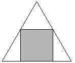 | 2. 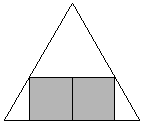 | 3. 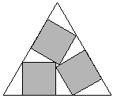 | ||
| s = 1 + 2 / √3 = 2.154+ Trivial. | s = 2 + 2 / √3 = 3.154+ Trivial. | s = 3 / 2 + √3 = 3.232+ Found by Erich Friedman in 1997. |
| 4. 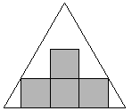 | 5. 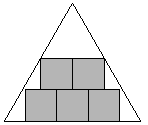 | 6. 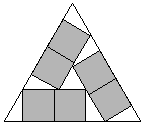 | ||
| s = 3 + 2 / √3 = 4.154+ Found by Erich Friedman in 1997. | s = 2 + 4 / √3 = 4.309+ Found by Erich Friedman in 1997. | s = 2 + 4/ √3 = 4.309+ Found by Erich Friedman in 1997. |
| 7. 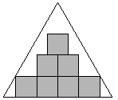 | 8. 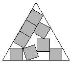 | 9.
| ||
| s = 4 + 2 / √3 = 5.154+ Found by Erich Friedman in 1997. | s = 5.301+ Found by David W. Cantrell in July 2002. | s = 3 + 4 / √3 = 5.309+ Found by Erich Friedman in 1997. |
| 10. 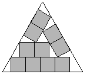 | 11. 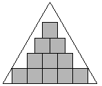 | 12. 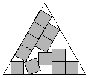 | ||
| s = 2 + 2 √3 = 5.464+ Found by Erich Friedman in 1997. | s = 5 + 2 / √3 = 6.154+ Found by Erich Friedman in 1997. | s = 6.301+ Found by David W. Cantrell in July 2002. |
| 13. 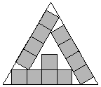 | 14. 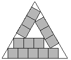 | 15.
| ||
| s = 4 + 4 / √3 = 6.309+ Found by Erich Friedman in 1997. | s = 3 + 2 √3 = 6.464+ Found by Erich Friedman in 1997. | s = 3 + 2 √3 = 6.464+ Found by Erich Friedman in 1997. |
16.
| 17. 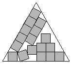 | 18. 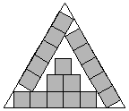 | ||
| s = 6 + 2 / √3 = 7.154+ Found by Erich Friedman in 1997. | s = 7.301+ Found by David W. Cantrell in July 2002. | s = 5 + 4 / √3 = 7.309+ Found by Erich Friedman in 1997. |
| 19. 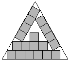 | 20. 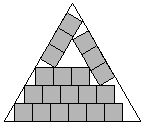 | 21. 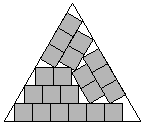 | ||
| s = 4 + 2 √3 = 7.464+ Found by Erich Friedman in 1997. | s = 3 + 8 / √3 = 7.618+ Found by Erich Friedman in 1997. | s = 3 + 8 / √3 = 7.618+ Found by Erich Friedman in 1997. |
| 22. 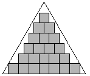 | 23. 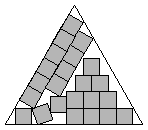 | 24. 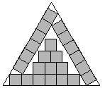 | ||
| s = 7 + 2 / √3 = 8.154+ Found by Erich Friedman in 1997. | s = 8.301+ Found by David W. Cantrell in July 2002. | s = 6 + 4 / √3 = 8.309+ Found by Erich Friedman in 1997. |
| 25. 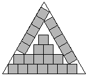 | 26. 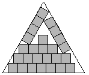 | 27. 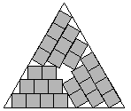 | ||
| s = 5 + 2 √3 = 8.464+ Found by Erich Friedman in 1997. | s = 4 + 8 / √3 = 8.618+ Found by Erich Friedman in 1997. | s = 4 + 8 / √3 = 8.618+ Found by Erich Friedman in 1997. |
| 28. 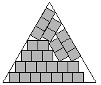 | 29. 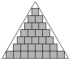 | 30. 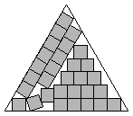 | ||
| s = 3 + 10 / √3 = 8.773+ Found by Erich Friedman in 1997. | s = 8 + 2 / √3 = 9.154+ Found by Erich Friedman in 1997. | s = 9.301+ Found by David W. Cantrell in July 2002. |
| 31. 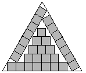 | 32. 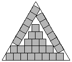 | 33. 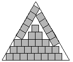 | ||
| s = 7 + 4 / √3 = 9.309+ Found by Erich Friedman in 1997. | s = 6 + 2 √3 = 9.464+ Found by Erich Friedman in 1997. | s = 5 + 8 / √3 = 9.618+ Found by Erich Friedman in 1997. |
| 34. 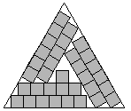 | 35. 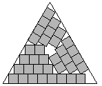 | 36. 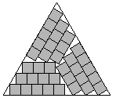 | ||
| s = 5 + 8 / √3 = 9.618+ Found by Erich Friedman in 1997. | s = 4 + 10 / √3 = 9.773+ Found by Erich Friedman in 1997. | s = 4 + 10 / √3 = 9.773+ Found by Erich Friedman in 1997. |